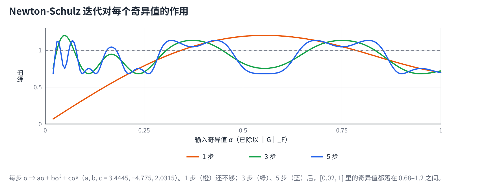
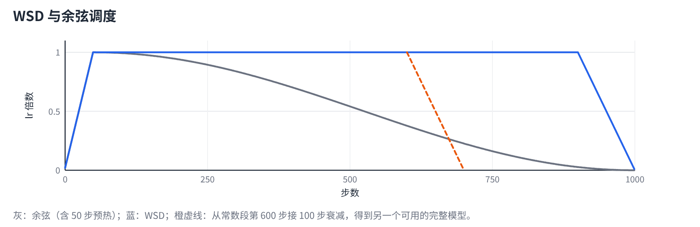
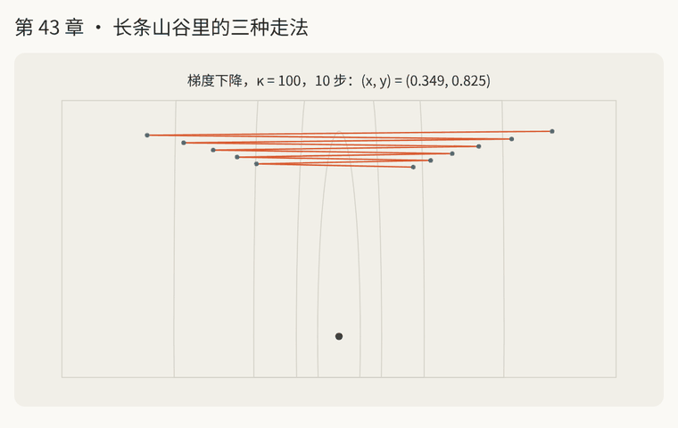

第 43 章 · 现代优化器：Adam 的预条件、Shampoo / SOAP、Muon、Lion、WSD 调度、临界批量
本地运行
git clone https://github.com/wikieden/math-and-eval-stats
cd math-and-eval-stats/code/notebooks
pip install jupyterlab torch numpy
jupyter lab ch43_modern_optimizers.ipynb也可以下载后直接用 VS Code 打开 .ipynb 运行。需要 GPU 的章节在 Colab 里选「代码执行程序 → 更改运行时类型 → GPU」。
本章回答：Adam 在几何上到底做了什么？Shampoo 用两个矩阵预条件是什么意思？Muon 的 Newton-Schulz 迭代在做什么，为什么不直接做 SVD？Lion 只用符号为什么也能训？WSD 学习率调度有什么好处？batch 开多大才不浪费？
讲解日期：2026-11-25 · 上一章：第 42 章 参数化与初始化 · 下一章：第 44 章 训练稳定性
对应原文：Shampoomath-and-eval-stats/materials/text/papers/shampoo-1802.09568.txt（算法 1 矩阵情形 L122–L136）；SOAPmath-and-eval-stats/materials/text/papers/soap-2409.11321.txt（Shampoo 与在其特征基里跑 Adafactor 的等价，L21–L56）；Muon is Scalablemath-and-eval-stats/materials/text/papers/muon-is-scalable-2502.16982.txt（Newton-Schulz 正交化 L100、L134–L159，系数 a, b, c）；Lionmath-and-eval-stats/materials/text/papers/lion-symbolic-discovery-2302.06675.txt（Program 1 L74–L82、算法 2 L352–L358）；MiniCPMmath-and-eval-stats/materials/text/papers/minicpm-wsd-2404.06395.txt（WSD 调度 L87、§4）；McCandlish 2018math-and-eval-stats/materials/text/papers/gradient-noise-scale-1812.06162.txt（B_simple = tr(Σ)/|G|²，L299–L309）
本章缩写：SOAP = ShampoO with Adam in the Preconditioner's eigenbasis（在预条件器特征基里跑 Adam 的 Shampoo）；NS = Newton-Schulz（两位数学家的姓：迭代求矩阵函数的方法）；WSD = Warmup-Stable-Decay（预热 / 稳定 / 衰减）；B_crit、B_simple = 临界批量、简化的梯度噪声尺度；Σ = 单样本梯度的协方差；G = 真梯度。全部缩写见 附录 · 缩写与术语表
讲解
第一步：Adam 是对角预条件（2026-11-25）
类比：在一个又长又窄的山谷里下山。 普通梯度下降沿陡的方向猛冲、沿平的方向几乎不动；Adam 给每个方向单独定步长，各个方向走得差不多快。
Adam 的更新 \(\Delta\theta = -\text{lr}\cdot\hat m/(\sqrt{\hat v} + \epsilon)\)：每个坐标除以自己梯度的均方根。这相当于用一个对角矩阵 diag(√v)⁻¹ 去“预条件”梯度（第 14 章）。
例子（f = ½(100x² + y²)，从 (1, 1) 出发，曲率差 100 倍）：
| 方法 | 第 10 步 (x, y) | 第 60 步 (x, y) |
|---|---|---|
| 梯度下降（lr = 0.019，稳定上限 2/100） | (0.349, 0.825) | (0.002, 0.316) |
| Adam（lr = 0.05） | (0.512, 0.512) | (0.021, 0.021) |
| 牛顿法（用真曲率） | (0, 0) | (0, 0) |
梯度下降的 lr 被陡方向卡死，平方向 60 步只走了 68%；Adam 两个方向一样快。牛顿法一步到位，但要 Hessian 的逆，大模型算不起。
一句话：Adam = 用梯度的均方根做对角预条件，让每个坐标按自己的尺度走；处理不了坐标之间的耦合。
第二步：Shampoo / SOAP：左右两个矩阵预条件（2026-11-25）
对一个矩阵参数 W（m×n），梯度 G 也是 m×n。Shampoo（算法 1，L122）分别累积左右两个统计量，用它们的 −1/4 次方预条件：
只有一步时，L^{−1/4}GR^{−1/4} 正好把 G 的所有奇异值变成 1（保留奇异向量，即 UVᵀ）：
例子（4×3 的 G）：G 的奇异值 [3.47, 1.68, 0.97] → 预条件后 [1, 1, 1]。
比 Adam 多考虑了“行之间”和“列之间”的相关性（Kronecker 结构的近似全矩阵预条件），代价是要算 m×m 和 n×n 矩阵的分数次幂。SOAP（L21–L56）发现 Shampoo 等价于在 L、R 的特征基里跑 Adafactor，于是改成在这组基里跑 Adam、低频更新特征基，更便宜也更稳。
一句话：Shampoo 用左右两个累积矩阵的 −1/4 次方预条件矩阵梯度，单步时就是把奇异值全变成 1；SOAP 在它的特征基里跑 Adam。
第三步：Muon：用 Newton-Schulz 迭代直接正交化（2026-11-25）
既然目标方向是 UVᵀ（奇异值全为 1），Muon 就不累积 L、R，直接对动量矩阵做近似正交化。SVD 在 GPU 上慢，Muon 用 Newton-Schulz 迭代（只有矩阵乘）：
系数 a, b, c = 3.4445, −4.7750, 2.0315（L157–L159）是为“少几步、把小奇异值快速拉上来”调的，不追求精确收敛到 1。
例子（同一个 G）：
| NS 步数 | 0 | 1 | 3 | 5 |
|---|---|---|---|---|
| 奇异值 | [0.87, 0.42, 0.24] | [1.12, 0.86, 0.78] | [1.07, 0.85, 0.69] | [1.13, 0.82, 0.74] |
5 步后都落在 0.7–1.2 之间：大奇异值方向不再主导更新，小奇异值方向被放大。Muon 只用于隐藏层的矩阵参数，嵌入、输出层、偏置仍用 AdamW；Muon is Scalable（L100、L134）把它扩展到大模型，并加了权重衰减和按矩阵形状缩放更新幅度。

图 43-1 · 横轴输入奇异值（归一化后 0 到 1），纵轴迭代 1、3、5 步后的输出；3 步以后整个区间都被推到 0.68–1.2，1 步还不够一句话：Muon 用 5 步 Newton-Schulz（只有矩阵乘）把动量矩阵的奇异值推到 1 附近，近似 Shampoo 的 UVᵀ 方向，便宜得多。
第四步：Lion：只要符号（2026-11-25）
Lion（Program 1，L74–L82）是自动搜索出来的：
例子：梯度 [0.003, −2, 50] → 更新方向 [1, −1, 1]：每个坐标走一样远，梯度大小完全不影响步长。
和 Adam 比：省掉二阶矩 v（显存少一半的优化器状态）；更新的范数固定（√d·lr），所以 lr 通常要比 Adam 小 3–10 倍、权重衰减相应调大。符号更新也可以看成 Adam 在 β₂ → 0 时的极限（第 42 章用它近似 Adam）。
一句话：Lion 只用动量插值后的符号更新，每个坐标步长相同、省掉二阶矩；lr 要比 Adam 小。
第五步：WSD 调度与临界批量（2026-11-25）
WSD（MiniCPM L87、§4）：线性预热 → 长时间常数学习率 → 最后约 10% 的步数快速降到 0。
例子（1000 步，预热 50 步，最后 100 步衰减）：第 0、49、500、900、950、999 步的学习率倍数 0.02、1.0、1.0、1.0、0.5、0.01。

图 43-2 · 灰：余弦调度；蓝：WSD（50 步预热、常数段、最后 10% 线性降到 0）；虚线是从常数段第 600 步接一段衰减得到的另一个完整模型好处：常数段的任何一个检查点都可以“接一段衰减”得到一个完整训练的模型，不用像余弦调度那样事先定死总步数；续训时也只需要从常数段的检查点接着跑。loss 在衰减段会明显下降一截。
临界批量（McCandlish L299–L309）：一个 batch 的梯度估计噪声 ∝ tr(Σ)/B。梯度噪声尺度
batch 远小于 B_simple 时，batch 翻倍 ≈ 步数减半（完美并行）；远大于时，再加大 batch 几乎不省步数，只是浪费算力。
例子（线性回归在 w = 0 处）：B_simple ≈ 116。训练进行中 |G| 变小，B_simple 会变大：大模型训练后期常把 batch 加大。
场景代码：Muon 管矩阵参数、AdamW 管其余参数，再套 WSD（示意写法：较新的 PyTorch 提供 torch.optim.Muon，旧版本用 Muon 作者的参考实现；本书环境没装 torch，没跑过）：
opt_muon = torch.optim.Muon([p for p in model.parameters() if p.ndim == 2], lr=0.02, momentum=0.95)
opt_adam = torch.optim.AdamW(other_params, lr=3e-4) # 嵌入、输出层、偏置、norm 仍用 AdamW
sched = torch.optim.lr_scheduler.LambdaLR(opt_adam, lambda t: wsd(t, total, warm))
一句话：WSD 的常数段检查点随时能接衰减成完整模型；batch 超过梯度噪声尺度 tr(Σ)/|G|² 后收益递减。
动画演示：长条山谷里的三种走法

可交互版：animations/43-modern-optimizers.html（滑块调步数和曲率比；下拉切换方法）。
怎么看：
- 椭圆是 f = ½(κx² + y²) 的等高线，点是迭代轨迹（第一步）；
- 梯度下降：沿陡方向来回抖、沿平方向慢慢挪；Adam：斜着直奔原点；符号更新（Lion 式）：每步每个坐标走同样远，在原点附近来回跳；
- 把曲率比 κ 调大：梯度下降更慢，Adam 几乎不受影响。
练习与作答记录
题 1（第一步）：f = ½(400x² + y²)，梯度下降的最大稳定步长是多少？用这个步长的一半，y 方向每步缩小多少？
作答：（待作答）
题 2（第二、三步）：G = diag(4, 1)（2×2），L^{−1/4}GR^{−1/4} 是什么？用 Muon 的初值 X₀ = G/‖G‖_F，X₀ 的奇异值是多少？
作答：（待作答）
题 3（第五步）：如果单样本梯度协方差的迹是 50，真梯度的范数平方是 0.1，B_simple 是多少？batch 从 64 加到 128，大约能省多少步？
作答：（待作答）
口诀
Adam 是对角预条件，各坐标按自己的尺度走；
Shampoo 左右开弓，单步就是 U V 转置；
Muon 五步 Newton-Schulz，只用矩阵乘把奇异值推到一；
Lion 只看符号，lr 要小；
WSD 常数段随时接衰减，batch 别超过噪声尺度。
本章复习卡片
ST141（Adam 的对角预条件视角）、ST142（Shampoo / SOAP 与 Muon 的 Newton-Schulz 正交化）、ST143（Lion 的符号更新）、ST144（WSD 调度与梯度噪声尺度）。练习做完后，按答错、卡住的地方补上。
附录 · 延伸阅读
留给以后深入学习用，不影响本章主线。★ 是建议先读的。
推荐阅读
| 读什么 | 读哪里 | 读它为了什么 |
|---|---|---|
| ★ Muon is Scalable（2025） | §2（L100–L160） | Newton-Schulz 正交化、权重衰减、更新幅度缩放 |
| ★ Shampoo（Gupta 2018） | §2–3、算法 1（L122） | Kronecker 预条件 |
| SOAP（Vyas 2024） | §3 | Shampoo 与 Adam / Adafactor 的关系 |
| Lion（Chen 2023） | §2、Program 1 | 符号更新、超参建议 |
| McCandlish 2018 | §2（L299–L309） | 梯度噪声尺度与临界批量 |
| 第 14 章 无约束优化 | 第一至四步 | 梯度下降的稳定步长、动量、Adam |
数学原理
- 对角预条件：Δθ = −lr·D⁻¹g；D = diag(√E[g²]) 时各坐标的有效步长 ≈ lr/|梯度尺度|。
- Shampoo 的单步：G = USVᵀ ⇒ (GGᵀ)^{−1/4}G(GᵀG)^{−1/4} = US^{−1/2}·S·S^{−1/2}Vᵀ = UVᵀ。
- Newton-Schulz：X → aX + bXXᵀX + c(XXᵀ)²X 对每个奇异值独立地作用 σ → aσ + bσ³ + cσ⁵；选系数让这个多项式把 (0, 1] 映射到 1 附近。
- 梯度噪声尺度：E|G_B − G|² = tr(Σ)/B；当噪声和信号 |G|² 相当时，B ≈ tr(Σ)/|G|²。
公式清单
| 公式 | 意思 |
|---|---|
| \(\Delta\theta = -\text{lr}\,\hat m/\sqrt{\hat v}\) | Adam |
| \(\Delta W \propto L^{-1/4}GR^{-1/4}\) | Shampoo |
| \(X \leftarrow aX + (bXX^\top + c(XX^\top)^2)X\) | Muon 的 Newton-Schulz |
| \(u = \text{sign}(\beta_1m + (1 - \beta_1)g)\) | Lion |
| \(B_{simple} = \text{tr}(\Sigma)/\lvert G\rvert^2\) | 梯度噪声尺度 |
代码对照：把本章的数字用代码算一遍
代码在仓库本地
math-and-eval-stats/solutions/chapter-code/ch43_modern_optimizers.py，配套测试tests/test_ch43.py：
bash cd math-and-eval-stats/solutions/chapter-code uv run python ch43_modern_optimizers.py uv run pytest tests/test_ch43.py
讲义 ↔ 代码：
| 讲义 | 公式 | 写法 | 跑出来 |
|---|---|---|---|
| 第一步 预条件 | GD / Adam / 牛顿 | run("adam") |
第 60 步 (0.021, 0.021) |
| 第二步 Shampoo | L^{−1/4}GR^{−1/4} | shampoo_direction(g) |
奇异值 [1, 1, 1] |
| 第三步 Muon | NS 5 步 | newton_schulz(g, 5) |
[1.13, 0.82, 0.74] |
| 第四步 Lion | sign | lion_step(g, m) |
[1, −1, 1] |
| 第五步 WSD、噪声尺度 | 分段线性；tr(Σ)/|G|² | wsd(t)、noise_scale() |
0.5 @ 950；≈ 116 |
关键几行：
x = x - 0.05 * (m / (1 - 0.9 ** t)) / (np.sqrt(v / (1 - 0.999 ** t)) + 1e-8) # Adam（带偏差修正）
return mat_pow(g @ g.T, -0.25) @ g @ mat_pow(g.T @ g, -0.25) # Shampoo 单步
m = x @ x.T; x = a * x + (b * m + c * m @ m) @ x # Newton-Schulz 一步
代码里才看得到的 3 件事：
- NS 迭代对“宽”矩阵做：4×3 的 G 先转置成 3×4，让 XXᵀ 是更小的 3×3，最后再转回来（Muon 原实现也这样）。
- 矩阵分数次幂用特征分解：
mat_pow对对称矩阵做 eigh 再对特征值取幂，小于 1e-12 的特征值截掉，防止 0 的负次幂。 - 噪声尺度在 w = 0 处算：离最优解越近 |G| 越小，B_simple 越大；代码只给一个点，实际训练中它随时间变化。
自己改一改（不影响练习答案）：
- 把
run的曲率改成 [1000, 1]，比较梯度下降和 Adam 第 60 步的位置。 - 把
newton_schulz的系数换成 (1.5, −0.5, 0)（经典的三次 NS），看 5 步后的奇异值。